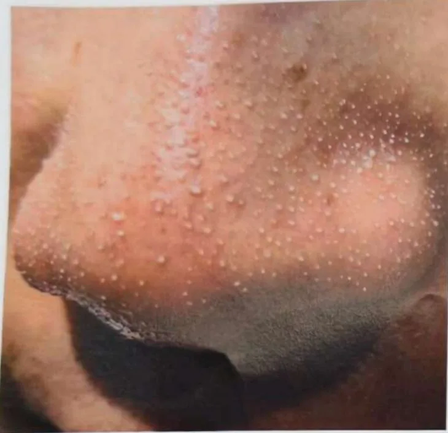
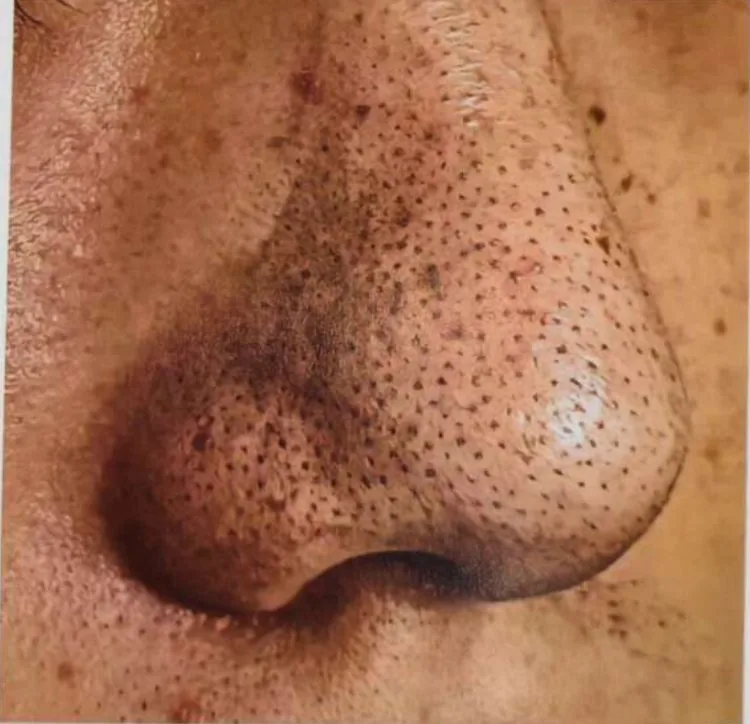
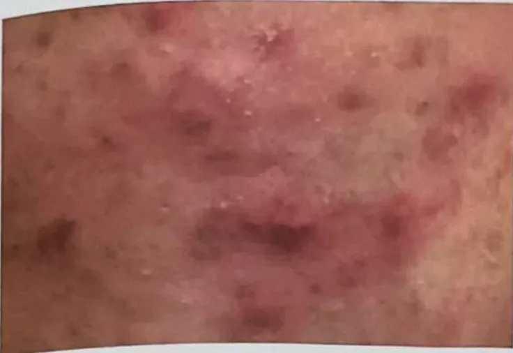
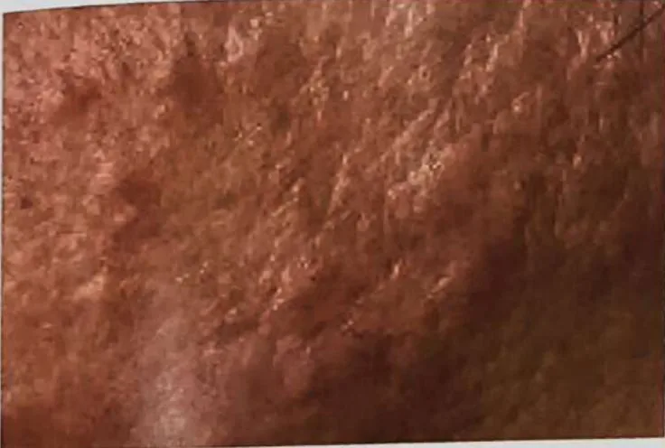
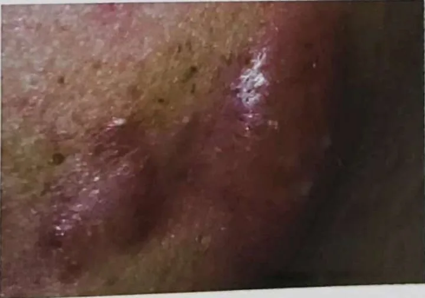
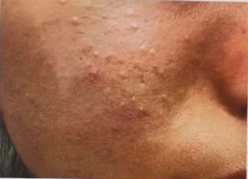
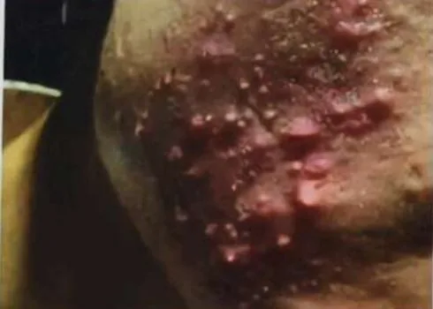
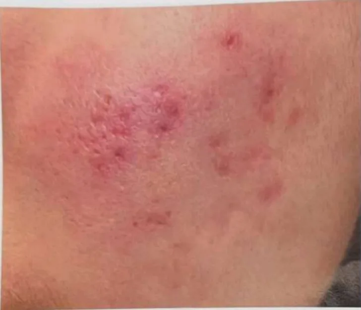
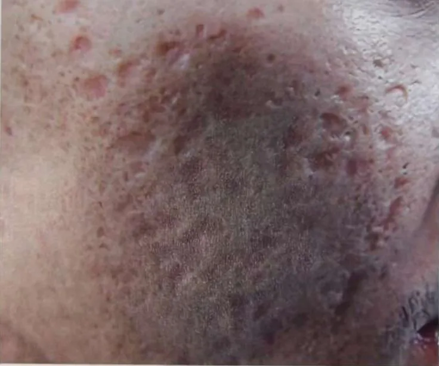

脸颊长痘
脸颊上的小红疙瘩或顶部有脓点的小疙瘩，通常由毛孔堵塞引起
这是什么
脸颊上的痘痘是有时会痛的小疙瘩，通常始于油脂和死皮堵住毛孔，皮肤上的细菌再加重红肿。
- 脸颊和面部
- 青少年和成年人都常见
- 红色小疙瘩，有时会痛
- 就诊科室
- 药剂师或家庭医生；没有好转时看皮肤科医生
- 多发人群
- 青少年和年轻人最常见，各年龄的成年人也会出现
- 传染性
- 不传染
- 病程
- 常时好时坏；坚持护理，可能要几周或几个月才会改善
常见表现

长痘痘痤疮
痘痘的类型

白头粉刺：毛孔堵塞形成的白色小颗粒 
黑头粉刺：毛孔张开，油脂氧化变黑 
红色丘疹：开始发炎，摸起来会痛 
脓疱：红肿并带有白色脓头 
结节：皮肤下的硬块，按压会痛 
囊肿：深层、柔软、充满脓液的肿块
痘痘的分级

Ⅰ级 轻度：以黑头、白头粉刺为主 Ⅱ级 中度：出现红色丘疹 
Ⅲ级 中重度：大量脓疱，建议同时看医生 Ⅳ级 重度：结节和囊肿，请先看医生
为什么要及早护理痘痘
大部分严重的痘痘都是从轻度拖成的。痘印和痘坑需要更长时间才能改善，所以要及早护理。
痘痘留下的4种痘印

红色痘印：舒缓修复并做好防晒，帮助消退 
黑色痘印：残留的色素，每天都要防晒 
凹陷痘坑：需要专业修复 
凸起疤痕：可以改善，但无法完全去除
错误的祛痘方法
- 挤痘痘：会把细菌推得更深
- 长期涂类固醇药膏：停用后痘痘反弹
- 在家自己做刷酸：皮肤变得敏感
- 在痘痘上刮痧或磨砂：会让发炎扩散
请继续日常治疗
请继续按医嘱服药，并按时复诊。我们的调理是温和的辅助，不能代替医疗。
其他症状
- 黑头或白头（小的堵塞毛孔）
- 触碰时皮肤有压痛或疼痛
- 脸颊皮肤油腻或发亮
- 痘痘消退后留下的暗色或红色痕迹，有时还会留下小疤痕
为什么会这样

压力大心理压力
其他原因
- 毛孔被油脂和死皮堵住；皮肤上的细菌会加重红肿
- 激素变化，例如青春期、月经前或怀孕期间
- 手、手机、口罩或头盔对脸颊的摩擦或压迫
- 浓妆、厚重的面霜或会堵塞毛孔的护发产品
出现这些情况请先看医生
- 使用新产品或新药后嘴唇、面部或喉咙肿胀，或呼吸困难：拨打999
- 脸上出现又红又热、非常疼痛的肿块并发热，或眼睛附近肿胀：今天就看医生
- 又深又痛的硬块，会留下痕迹或疤痕
- 痘痘突然明显加重，或伴有月经不规律、体毛增多
- 疙瘩几周都不消退、出血或不断变大，尤其是年长者
- 开始服用新药后才长出的痘痘：请询问医生或药剂师
如果有以上情况，请先看医生，再来做调理。
本页只是一般性的健康资讯。请继续按时服用平常的药物，并继续看医生。
请继续日常治疗
请继续按医嘱服药，并按时复诊。我们的调理是温和的辅助，不能代替医疗。
日常护理

轻柔清洗，轻轻拍干温和清洁 
不要挤或抠不要挤压
更多自我照顾的方法
- 手、手机和头发不要碰脸颊；经常清洗枕套、毛巾和手机屏幕
- 选择无油、不堵塞毛孔的护肤品和彩妆，睡前要卸妆
- 使用药力强的祛痘产品之前，先问药剂师或皮肤科医生；它们可能使皮肤干燥或刺痛
告诉理疗师
- 皮肤破损、发红或疼痛
- 怀孕
- 严重过敏
调理师会在开始前和你确认这一项。
常见问题
脸颊长痘是什么？
脸颊上的小红疙瘩或顶部有脓点的小疙瘩，通常由毛孔堵塞引起。脸颊上的痘痘是有时会痛的小疙瘩，通常始于油脂和死皮堵住毛孔，皮肤上的细菌再加重红肿。
脸颊长痘有哪些常见表现？
长痘痘
为什么会有脸颊长痘？
压力大
有脸颊长痘要怎么照顾自己？
轻柔清洗，轻轻拍干；不要挤或抠
AI Body Master 的调理对脸颊长痘有帮助吗？
调理是温和的无针经络养生辅助，不能治疗或治愈脸颊长痘，也不能代替药物或医生。开始前请告诉理疗师。
相关疾病
参考资料: General information based on public health sources such as Mayo Clinic, NHS, Cleveland Clinic and NCBI StatPearls.
页面更新: 2026-11-01